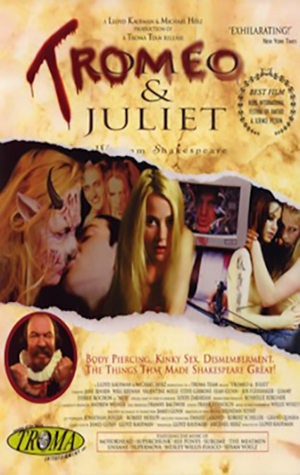
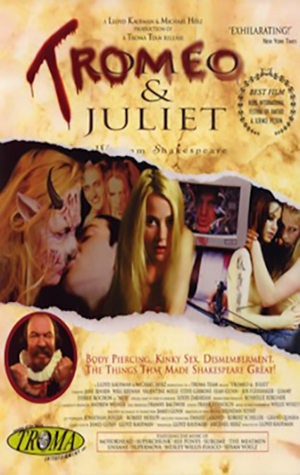

INDEX
- 줄거리
- 원작
- 갤러리
이처럼 격렬한 기쁨은 격렬한 종말을 맞게 될지니 그리하여 승리는 이내 스러지리라, 불과 화약이 입맞추듯 타오르기에. 그토록 달콤한 꿀이 황홀한 그 맛 속에 삽미(澁味)를 품고 있으니 그를 취함이 음식에 대한 욕망을 해칠 수 있음이라. 바라건대 온건히 사랑하라. 긴 사랑은 그러하노니. 사속(斯速)함은 노건(駑蹇)과 다를 바 없이 더디게 닿는도다. - 로렌스 수사, 2막 6장
로미오와 줄리엣(Romeo and Juliet)은 윌리엄 셰익스피어의 초기 희극이다. 서로 원수인 가문에서 태어난 로미오와 줄리엣이 사랑을 하게 되고 그들의 비극적인 죽음이 가문을 화해하게 만드는 이야기이다. 아름다운 대사와 극적 효과로 많은 칭송을 받는 셰익스피어의 대표작 가운데 하나이다.셰익스피어 당대에서부터 햄릿과 함께 가장 많이 공연되었으며 지금도 여전히 공연되고 있다. 두 주인공은 젊은 연인의 전형으로 자리잡았다.
Plot
길거리에서 몬테규가와 카풀렛가의 싸움이 일어나면서 연극이 시작된다. 베로나의 왕자 에스카루스는 머슴들까지도 만나면 싸울 정도로 심각한 두 가문의 다툼을 중재하면서 다시는 이러한 충돌이 없어야 할 것이라고 경고한다. 에스카루스를 따라온 패리스는 카풀렛 가의 열세살 난 딸 줄리엣과 결혼하기를 희망한다. 카풀렛은 줄리엣의 나이가 어린 점 때문에 제안을 받아들이는 게 조심스럽지만 줄리엣의 의향을 보기위해 그를 밤에 초대하기로 한다. 줄리엣의 어머니인 카풀렛 부인은 패리스와 자신의 딸의 결혼에 찬성하여 줄리엣에게 패리스를 만나볼 것을 권유한다. 한편, 로미오는 사랑하는 로잘린을 볼 수 없어 의기 소침해 있다. 로미오의 친구 벤볼리오는 머큐시오와 함께 오늘 밤 카풀렛 가의 파티에 로잘린이 올 지 모르니 가보자고 권한다. 로미오는 그들을 쫓아 카풀렛가에 몰래 숨어들었다가 발코니에 있는 줄리엣을 보고 첫눈에 반하고 만다. 로미오의 열렬한 구애로 줄리엣은 로미오의 사랑을 받아들인다. 서로 원수의 가문인 두 사람은 로마 가톨릭 교회 수도자인 로렌스 수사에게 도움을 청해 결혼하기로 약속하고 헤어진다.다음날 길거리에서는 다시 두 가문 사이에 싸움이 일어나 카풀렛가의 티발트는 로미오의 친구 머큐시오를 죽이고 만다. 이에 격분한 로미오는 줄리엣의 사촌인 티발트를 죽인다. 이 일로 로미오는 추방되고 줄리엣은 패리스와의 결혼을 강요받는다.줄리엣은 사랑을 위해 로렌스 수사에게 도움을 청하고 로렌스 수사는 마시면 죽은 것처럼 보이는 약을 만들어 줄리엣에게 건네준다. 로렌스 수사는 이러한 사정을 편지로 써 로미오에게 전달하려 한다. 그러나, 로미오는 줄리엣이 죽었단 소리를 듣자 마자 베로나로 돌아오고 로렌스 수사의 편지는 로미오가 추방당한 도시에 전염병이 퍼져서 출입이 통제되는 바람에 전달되지 못한다. 로미오는 줄리엣의 무덤 앞에서 패리스와 결투를 벌여 그를 죽인 후 누워 있는 줄리엣을 보게 된다.슬픔에 빠진 로미오는 독약을 먹고 자살한다. 줄리엣은 깨어나고 그 옆에 죽은 로미오를 보고 경악한다. 로미오의 시체를 안고 오열하던 줄리엣은 로미오의 단도로 가슴을 찔러 죽고 만다. 두 가문은 자신의 사랑하는 자식들이 가문간의 싸움 때문에 죽게 된 사실을 알게 되고 둘의 장례를 치르며 화해한다.
Original Story

셰익스피어의 로미오와 줄리엣은 아서 브룩의 서사시 로미오와 줄리엣의 비극을 바탕으로 한 것이다. 아서 브룩의 서사시는 1562년 출간되었다. 셰익스피어는 아서 브룩의 서사시에서 줄거리를 가져왔다.[1] 그러나 여러 등장 인물과 세부적인 이야기들은 셰익스피어의 독창적인 창작이다. 1567년 윌리엄 페인터는 이탈리아를 배경으로 한 여러가지 이야기를 묶어 《환희의 궁전》이란 제목으로 출간하였으며 여기에 로미오와 줄리엣의 이야기가 〈로미오와 줄리엣의 지고지순한 사랑〉이라는 제목으로 삽입되었다. 페인터가 출간한 로미오와 줄리엣의 이야기는 당시 라틴어로 쓰인 이탈리아 소설의 전통에 따라 연극의 막과 같이 장으로 구분되어 이야기가 구성되어 있었으며 셰익스피어 역시 이 구성을 참조하였다.셰익스피어 당대의 런던 극장가에서는 이탈리아 이야기가 선풍적인 인기를 얻고 있었다. 이러한 인기에 힘입어 셰익스피어 역시 끝이 좋으면 다 좋다, 법에는 법으로, 로미오와 줄리엣과 같은 이탈리아를 배경으로 하는 희극을 선보였다. 아서 브룩의 시 역시 이러한 유행에 따라 이탈리아의 작가 마테오 반델로가 1554년 발표한 소설집 속의 〈질레타와 로미오〉를 번역한 것이었다.반델로의 이야기는 셰익스피어의 로미오와 줄리엣이 공연되는 동안 프랑스에서도 번역되어 공연되었다고 하나 전해지지는 않는다. 마테오 반델로의 〈질레타와 로미오〉 역시 그보다 앞서 루이지 다 포르토가 1530년 경 발표한 《새로이 발견한 두 귀족 연인의 이야기》 (이탈리아어: Historia novellamente ritrovata di due nobili amanti)에 수록된 〈질레다와 로미오〉를 토대로 쓰인 것이다. 근래에 들어 베네치아의 베로나를 무대로 하는 카풀렛과 몬타규 가문의 두 연인에 관한 다양한 판본의 비슷한 이야기가 수집되고 있다. 다 포르도 역시 다양한 이야기를 수집하여 재구성 하였을 것으로 추측되며 이 이야기들은 어느 정도 실화에 바탕을 두고 있을 것으로 추정된다. 13세기경 몬테치 가와 카풀레티 가는 이탈리아의 유력한 귀족 가문 중 하나였다.질레타의 발코니와 무덤은 여전히 베로나의 인기있는 관광 명소이다. 학자들은 그 장소가 실재 무대였는지에 대해서는 회의적이다.로미오와 줄리엣과 비슷한 줄거리를 가진 이야기 중 가장 오래된 것은 마수치오 살레미타노가 1476년 발표한 《서른 세가지 이야기》에 들어있는 시에라의 〈마리토와 지아노차 이야기〉이다.로미오와 줄리엣의 비극적인 사랑 이야기의 기원은 고대에까지 거슬러 올라간다. 예를 들어 피라모스와 티스베 이야기는 포르도의 작품에 많은 영향을 준 것으로 평가된다. 이러한 영향은 셰익스피어의 이야기에도 반영되었다. 예를 들면, 부모가 원치 않는 사랑, 여자 주인공이 죽은 것으로 오해한 끝에 자살하는 남자 주인공 등이 그것이다.[8] 브룩은 이탈리아의 이야기를 번역하면서 제프리 초서의 작품인 트로일로스와 크리세이드를 참조하였다. 한편 에페소스의 작가 에베소의 제노폰은 3세기경 연인을 이별하게 만드는 죽은 것처럼 보이는 약이라는 설정이 담겨있는 로미오와 줄리엣의 이야기와 비슷한 희곡인 에베소인 이야기를 썼다. 이러한 설정은 크리스토퍼 말로가 그의 작품 헤로와 레안드로스, 카세지의 여왕 디도 등에서 다시 차용하여 셰익스피어 시대에는 널리 알려진 이야기 구성 방식이었다.
Interpretation and Criticism
비평의 역사
- 로미오와 줄리엣은 부분적인 많은 결점이 있음에도 불구하고 셰익스피어 최고의 걸작 가운데 하나로 꼽힌다. 비평가 사이에 논점이 되는 것 중 하나는 두 젊은 연인에 대한 해석의 차이다. 이들은 자신들을 둘러싼 어찌할 수 없는 비운에 필사적으로 대항하다 파멸한 것인가? 아니면, 맹목적인 정열에 휩싸여 비극적인 결말로 치달은 것인가? 여러 가지 해석이 분분하나 학자들의 관점 차이에 의한 이견때문에 결론을 내리지 못하고 있다. 1662년 초기 연극 비평가 새뮤얼 피프스는 "내가 본 것 중 최악의 연극"이라 혹평하였다.10년 후 존 드라이든은 등장인물 머큐시오에 대해 "머큐시오야 말로 셰익스피어의 기교의 정점이며 셰익스피어 자신이다. 3막에서 머큐시오를 죽임으로서 그는 자신을 죽였다"[11]라고 평가하였다. 로미오와 줄리엣에 대한 비평은 18세기에도 드문 드문 이루어졌으며 찰스 길든과 헨리 흄 사이에 등장인물의 성격 결함에 관한 논쟁이 있기도 하였다. 19세기에는 데이비드 게릭이 로미오의 자포자기와 줄리엣의 무모한 사랑에 초점을 맞추었고, 20세기에 이르러 리처드 그린 몰턴은 등장인물의 행동의 원인이 성격적 결함이 아닌 우연한 사건의 중첩에서 비롯된 것이라는 해석을 내세우기도 하였다.
극의 구성
- 셰익스피어는 로미오와 줄리엣 극의 구조를 희비극으로 구성한다. 제3막에서 머큐시오가 죽기 전까지 연극은 희극으로 진행된다. 머큐시오의 죽음과 함께 극은 갑작스럽게 전환되며 비극적인 분위기로 가득차게 된다. 극의 분위기는 점점 무거워지고 로미오가 죽은 듯 누워있는 줄리엣을 대하는 순간 극은 절정에 달하고 "숨막힐 듯한 불안감"이 엄습한다. 셰익스피어가 장치한 복선으로 인해 관객들은 로미오가 만약 페리오에 머물렀더라면 이 모든 사실을 알 수 있었을 것이란 점을 알고 있고 이는 절정의 불안감을 상승시킨다.[13] 이후 이 두 연인은 끝내 파멸하고 극은 급속히 결말로 내닫는다.
문체
- 셰익스피어는 로미오와 줄리엣에서 다양한 운문의 형식을 사용한다. 로미오가 줄리엣과 대화를 나눌 때는 소네트의 형식을 띠며, 코러스는 무운시의 형식으로 그리고 다른 여러 장면에서는 5보격 시의 형식이 사용된다.
| 베로나 가 | 카풀렛 가 | 카풀렛 가의 시종 | 몬타규 가 | 몬타규 가의 시종 |
| 에스카루스 왕자: 베로나의 왕자 | 카풀렛 경: 카풀렛 가의 가장 | 유모: 줄리엣의 유모, 카풀렛 가의 하녀 | 몬타규 경: 몬타규 가의 가장 | 아브람: 몬타규 가의 하인 |
| 카운트 패리스: 왕자의 친척 | 카풀렛 부인: 카풀렛 경의 부인, 줄리엣이 패리스와 결혼하기를 희망한다. | 피터: 유모를 보좌하는 하인 | 몬타규 부인: 몬타규 경의 부인 | 발사자: 로미오의 시종 |
| 머큐시오: 왕자의 또 다른 친척, 로미오의 친구 | 줄리엣: 카풀렛 부부의 딸, 여주인공 | 그레고리와 샘슨: 카풀렛 가의 하인 | 로미오: 몬타규 부부의 아들, 남주인공 | |
| 티발트: 카풀렛 경의 조카, 줄리엣의 사촌 | 벤볼리오: 로미오의 사촌이자 친구 |
Film

 

1936년 흑백영화인 미국영화
로미오와 줄리엣
트로미오와 줄리엣
로미오와 줄리엣 (1968년 영화)
로미오와 줄리엣 (1996년 영화)
1968년 영국,이탈리아 합작영화로 이탈리아 감독인 프랑코 제피렐리(1923~2019)가 감독하고 레너드 위팅(개봉 당시 표기는 레나드 화이팅)과 올리비아 핫세가 나온 영화. 로미오와 줄리엣하면 이 영화가 떠오를 정도로 유명했다. 85만 달러로 만들어 3890만 달러 대박을 벌어들였다. 하지만 두 주연은 너무나도 이 영화로 뜨다보니 이후 별 성공작이 없다. 대부, 태양은 가득히, 해바라기 같은 영화 음악으로 유명한 니노 로타(1911~1979)가 맡은 음악도 유명하다. 캐퓰릿 가의 축제에서 가수가 부르는 노래는 What is a youth / A time for us라는 제목으로 알려져 있기도 하다.
트로마 영화사가 만든 호러판 버젼! 트로마 사장인 로이드 카우프만과 바로 제임스 건이 공동감독(다만 감독 이름으론 카우프만만 내세웠다!), 각본을 맡았으며 카우프만도 역시 카메오로 나온다. 1999년 한국에서도 잠깐 개봉했다.